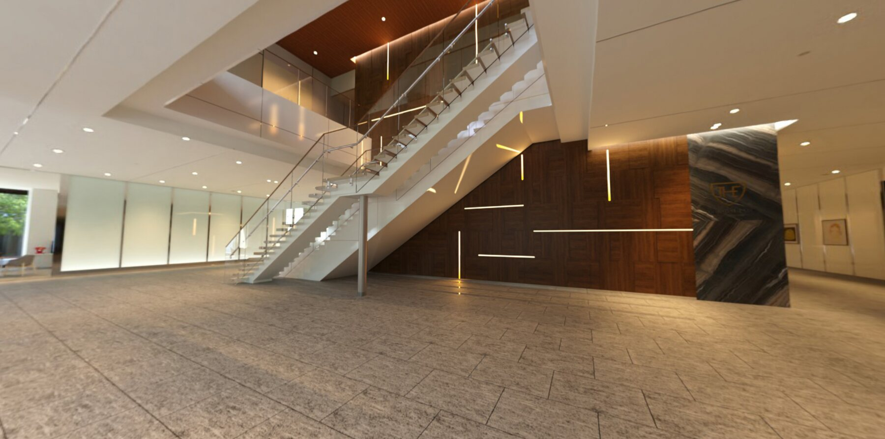
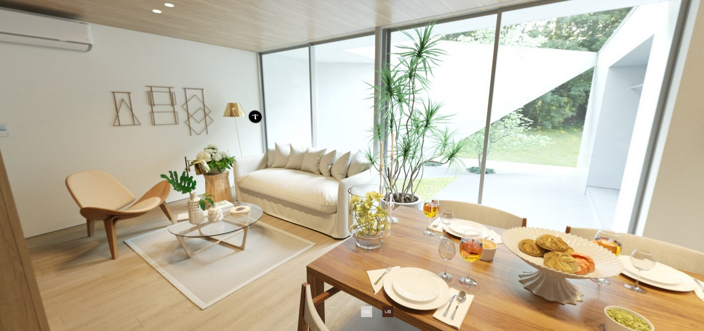
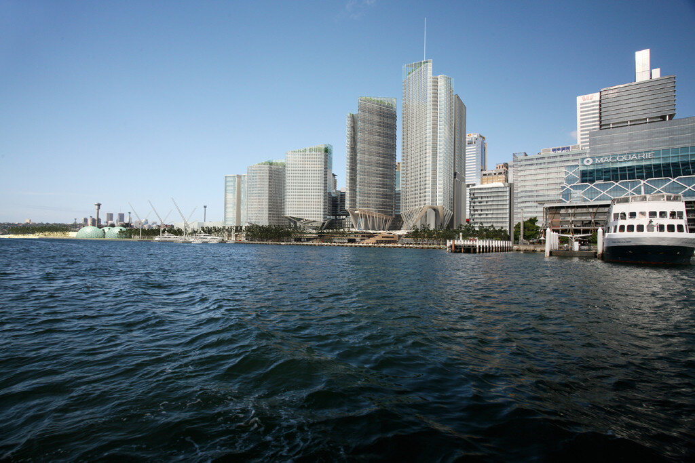
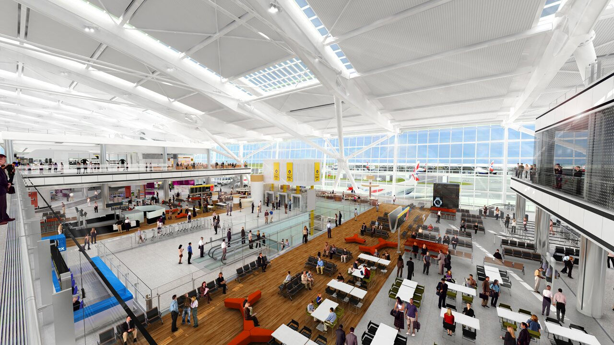
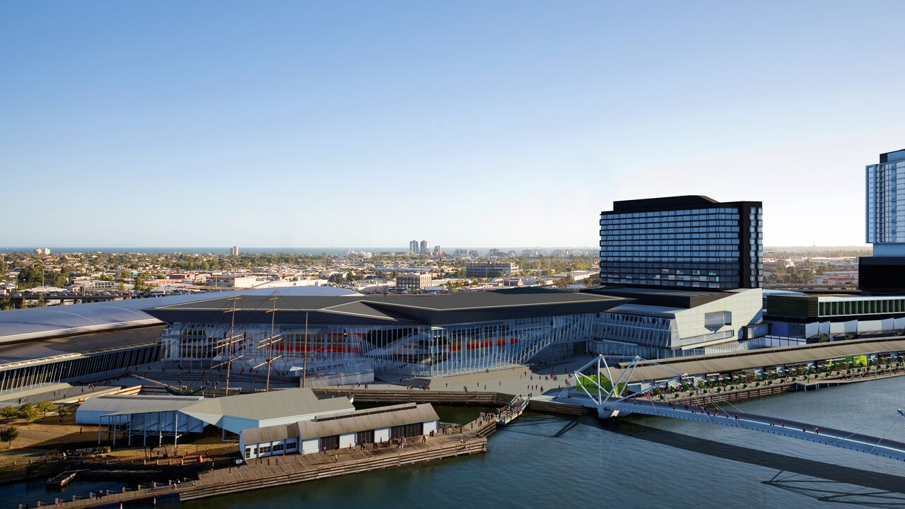
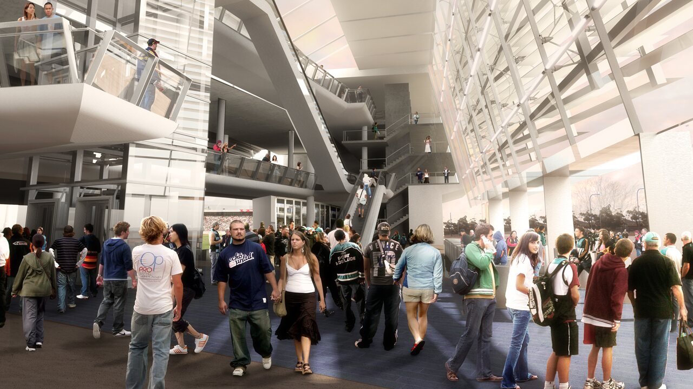
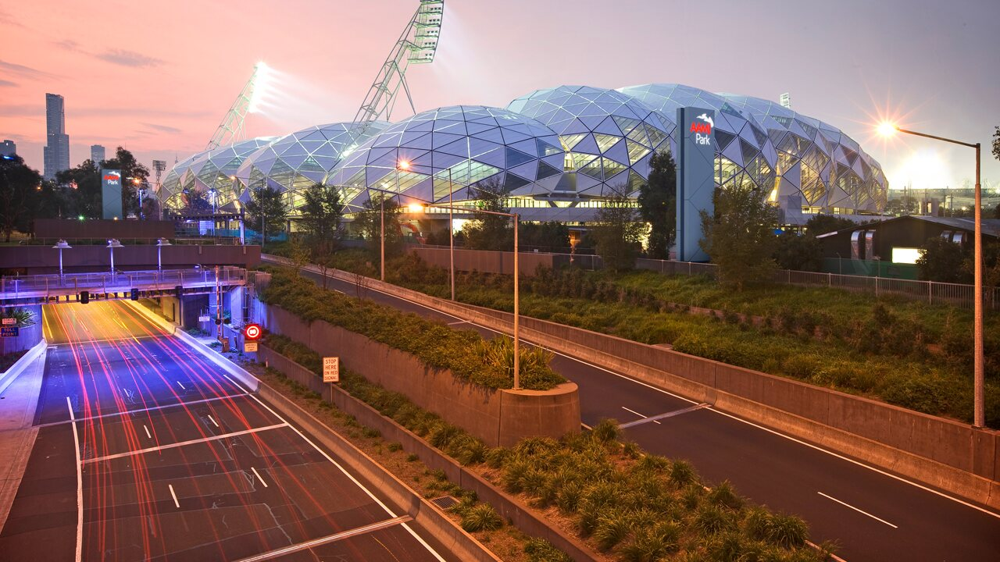
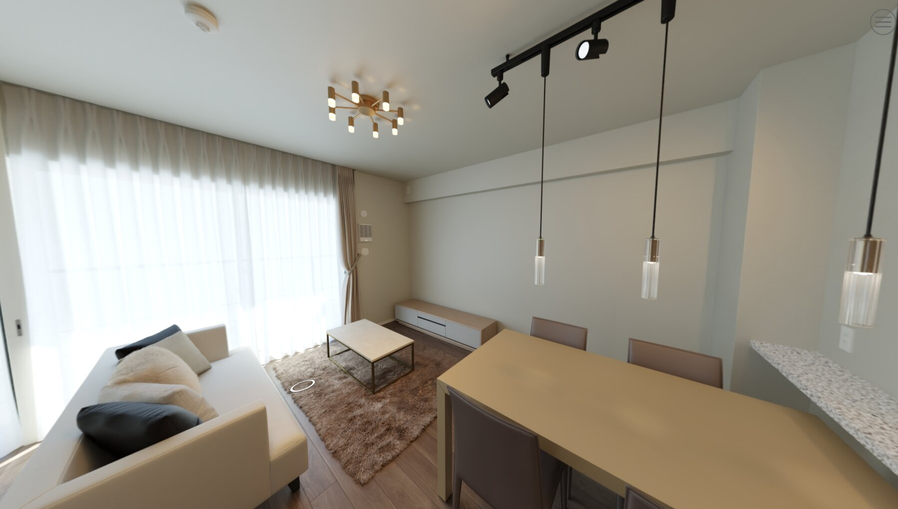
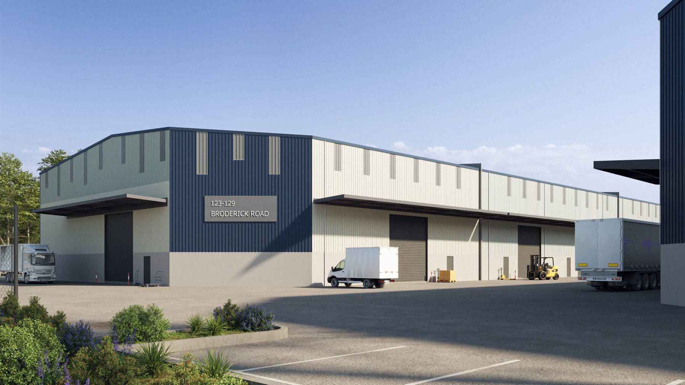
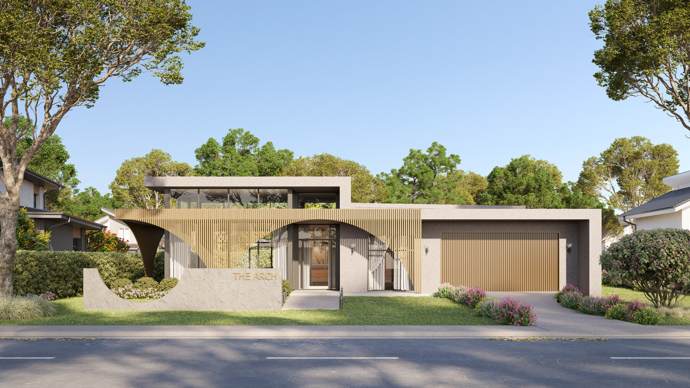

VISUALISATION / DIGITAL TWINS / OPENUSD
Visual technology for architecture, environments, and spatial data.
Poligono develops image-led and technically grounded 3D workflows for built environments, digital twins, real-time platforms, and design communication.
Contact the studio
Work
Applications across imagery, environments, and structured 3D content.









01
Architectural Visualisation
Still imagery and visual direction for architecture, interiors, products, and spatial communication.
02
Digital Twins
Prepared 3D content and visual systems for built environment data, asset context, and spatial review.
03
Real-Time Environments
Scene preparation, material handling, and environment structure for interactive and real-time platforms.
04
Product, Material & Asset Systems
Clean assets, calibrated materials, and reusable 3D systems for design and production workflows.
Technology
Structured workflows for visual output and technical exchange.
From still imagery to structured 3D datasets, Poligono helps translate complex spatial information into clear, usable visual systems.
-
OpenUSD
Scene assembly and interchange-aware workflows for complex 3D content.
-
3D asset preparation
Geometry cleanup, naming discipline, scale checks, and reusable content structure.
-
Material workflows
Consistent surface logic for visualisation, real-time use, and cross-platform delivery.
-
Real-time visualisation
Environment preparation for interactive review, spatial communication, and platform-ready scenes.
-
Pipeline automation
Small tools and repeatable processes that reduce manual handling in 3D production.
-
DCC, BIM, and platform interoperability
Practical translation between authoring tools, built environment data, and real-time systems.
Studio
Image-making, spatial technology, and production pipeline development.
Poligono sits between image-making, spatial technology, and production pipeline development. The work is visual, but the approach is technical: structured data, clean assets, efficient workflows, and clear communication.
- Architectural stills and visual direction
- Digital twin content preparation
- OpenUSD and scene assembly workflows
- Real-time environment preparation
- Material and asset pipeline development
- 3D workflow automation
Contact